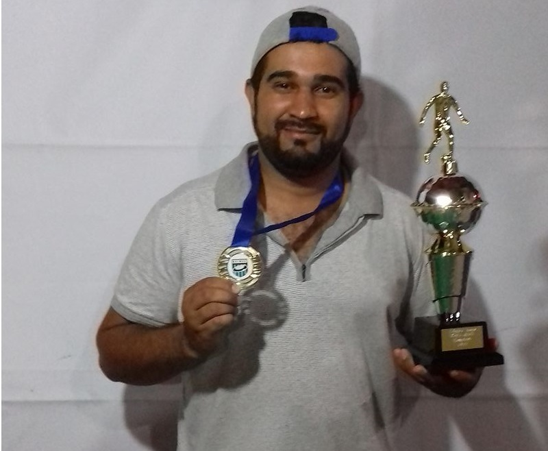

Bi-Leares
Na noite de sábado dia 14/10, encerrou-se a segunda edição da Super Taça Vetor Norte de Futmesa com o jogo entre Ventura Jr (Raul) x Baleares (Rodrigo). Todos as atenções estavam direcionadas a essa partida que definiria não só o campeão da Super Taça, como também os classificados à Copa Extra GRFMVN.
Só a vitória interessava a ambas as equipes, pois enquanto o Ventura Jr buscava a classificação para a Copa Extra, o Baleares visava o título. De fora a torcida também era grande, o Real Palestra (Fábio) torcia para que o Baleares saísse no máximo com um empate, o que lhe daria o seu primeiro título de Super Taça. Já a Sele-Galo (João Paulo - JP), precisava contar com a derrota do Ventura Jr, pois, era seu concorrente a última vaga da Copa Extra.
Ao final o placar apontou o resultado de 2x0 a favor do Baleares, que assim sagrou-se bicampeão da competição, ficando Real Palestra em segundo e Soc. Ventura (Gleison) em terceiro, repetindo o ano de 2016.
Em dia de finados ..."morreu" o tabu!!
Após vice-campeonato na Taça Sociedade Ventura, a Sele-Galo mostrou que quer mais!!!
Na manhã do dia 02/11 a Sele-Galo do técnico João Paulo Shermann, mostrou que tomou gosto por decisões e após se classifica na última vaga para a Copa Extra GRFMVN 2017, eliminou o Real Palestra (Fábio) em dois jogos pela semifinal, vencendo o primeiro por 1x0 e empatando o segundo em 0x0, se classificou à final da competição.
Na segunda final consecutiva enfrentou o Gálatas (Leandro) que havia eliminado a Soc. Ventura (Gleison).Foi um jogo truncado onde as marcações estavam levando a melhor, no primeiro tempo foram poucas as oportunidades de gol mas a Sele-Galo estava um pouco melhor e conseguiu dois chutes perigosos ao gol... No segundo tempo continuou as marcações acirradas, até que no meio do segundo tempo a Sele-Galo chegou ao gol em uma bola rasteira no canto esquerdo do goleiro, fazendo 1x0. Após o gol o Gálatas veio pra cima, mas errou as duas oportunidades que teve e o placar deu o título inédito e de forma invicta à Sele-Galo e seu técnico JP.
Além de levar seu primeiro titulo a Sele-Galo se classifica para A Recopa 2017.
O Foco Agora É A Recopa
Após fazer uma semifinal magistral frente a Soc. Ventura (Gleison) onde venceu as duas partidas pelos placares de 3x0 e 2x0 sucessivamente, o sonho do Gálatas do técnico Leandro Miranda Branco em conquistar mais um campeonato no ano foi interrompido pela Sele-Galo (JP) e agora resta lutar para levantar a taça da Recopa dos Campeões GRFMVN.
Enquanto isso vale comemorar o importante vice campeonato da Copa Extra.